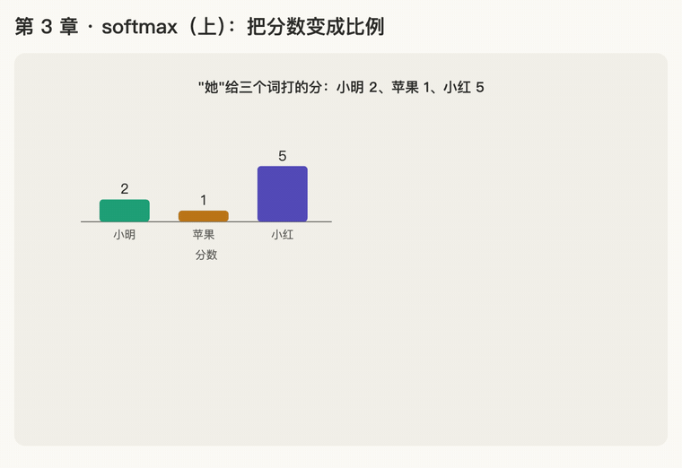

第 3 章 · softmax（上）：把分数变成比例
本章回答：分数打好了，"注意力"要怎么分出去？
讲解日期：2026-10-25 · 上一章：第 2 章 点积 · 下一章：第 4 章 按比例取信息
本章缩写：LayerNorm / LN = Layer Normalization（层归一化）；RMSNorm = Root Mean Square Normalization（均方根归一化）；softmax = soft（柔和的）+ max（取最大）：按大小分比例，不是只挑最大的；⊙ = element-wise product（逐个相乘，又叫 Hadamard 积）；exp = exponential（指数）：exp(x) = eˣ；CS336 = Stanford 课程 CS 336（Computer Science 336，Language Modeling from Scratch）。全部缩写见 附录 · 缩写与术语表
讲解
目的：分数 → 注意力比例
小明把苹果给了小红，因为她饿了。
假设"她"和其他几个词的点积分数是（数字是编的）：
| 词 | 和"她"的点积分数 |
|---|---|
| 小明 | 2 |
| 苹果 | 1 |
| 小红 | 5 |
模型真正需要的是比例：注意力百分之几给小明、百分之几给苹果、百分之几给小红。这些比例加起来要等于 1（100%），因为注意力总共就这么多。
最朴素的办法：每个分数除以总分。总分 = 2 + 1 + 5 = 8，小明 = 2 ÷ 8 = 0.25。分数越高，比例越大，而且全部加起来正好是 1。
softmax 做的就是这件事，只是在"除以总分"之前多了一个步骤（见第 6 章）。
softmax 是"归一化"吗？
是。 softmax 把一组分数变成加起来等于 1 的比例，"归一"就是把总和归成 1。
但"归一化"这个中文词在深度学习里指两种不同的东西，读论文时会碰到：
| softmax | LayerNorm（层归一化） | |
|---|---|---|
| 英文原词 | softmax | normalization |
| 作用对象 | 一组分数（"她"对每个词的打分） | 一个向量里的 512 个数 |
| 做完以后 | 每个数都是正数，加起来等于 1 | 平均值变成 0，大小调到统一范围 |
| 目的 | 得到"注意力分给谁多少"的比例 | 防止数字越算越大或越小，训练稳定 |
所以"softmax 把分数归一化成比例"是对的；但论文里的 Layer Normalization 不是 softmax，以后单独讲。
公式（朴素版）
- \(s_j\)：第 j 个词的分数（s = score）
- \(\sum_k s_k\)：所有分数的总和
- \(p_j\)：第 j 个词分到的比例（p = proportion），所有 \(p_j\) 加起来等于 1
动画演示：分数 ÷ 总分 = 比例，加起来是 1

可交互版：animations/03-softmax-ratio.html（要能点按钮、拖滑块，需要用本地服务打开，见 animations/README.md"跑起来看"）。
怎么看：
- 分数 [小明 2, 苹果 1, 小红 5] 摞成一根，总分 8；
- 每个分数 ÷ 8，得到比例条：25%、12.5%、62.5%；
- 比例条总长永远是 1；
- 滑块：改小红的分数，她占得越多，别人被挤得越小，但总长不变。
练习与作答记录
题：总分 8，小明占 0.25。苹果和小红各占多少？三个加起来是不是 1？
作答：苹果 0.125，小红 0.625。✓
核对：1 ÷ 8 = 0.125，5 ÷ 8 = 0.625；0.25 + 0.125 + 0.625 = 1。小红分数最高（5），比例也最大（62.5%）：读到"她"时，大部分注意力给小红。
口诀
分数变比例，加起来等于一。
softmax 分注意，LayerNorm 稳数值。
本章复习卡片
R06 softmax 朴素版 · R07 softmax 和 LayerNorm 的区别（见 review.md）
附录 · 延伸阅读
留给以后深入学习用，不影响本章主线。★ 是建议先读的。
- 本地论文的文本版在materials/text/papers/，表里的行号就是指这个文本版。
- CS336 handout 在cs336-spring2025/materials/text/cs336_spring2025_assignment1_basics.txt。
推荐阅读
| 读什么 | 读哪里 | 读它为了什么 |
|---|---|---|
| ★ Goodfellow《Deep Learning》 | §6.2.2.3 Softmax Units | 教科书怎么讲 softmax：把分数变成概率分布 |
| ★ Ba et al. 2016, Layer Normalization | §3 Layer normalization | LayerNorm 的原始定义（第 19 章会正式讲） |
| Attention Is All You Need | §3.1，L127 起 | 论文里 LayerNorm 出现的位置：LayerNorm(x + Sublayer(x)) |
| CS336 a1 handout | §3.5.1 RMSNorm、§3.5.4 式 (10) softmax | 现代模型用的 RMSNorm，以及作业要你写的 softmax |
数学原理
- 概率分布：一组数，每个都 ≥ 0，加起来等于 1。softmax 的输出就是一个概率分布。
- "归一化"有两种意思：softmax 是让一组数加起来等于 1；LayerNorm 是让一组数平均值为 0、方差为 1。名字像，目的不同。
- 平均值和方差：第 19 章的前置知识，这里先记住名字。
公式清单
| 公式 | 意思 |
|---|---|
| \(p_i = \frac{s_i}{\sum_j s_j}\) | 朴素版：分数除以总分（分数必须都是正数才行） |
| \(p_i \geq 0,\ \sum_i p_i = 1\) | 概率分布的两个条件 |
| \(\mu = \frac{1}{d}\sum_i x_i,\ \sigma^2 = \frac{1}{d}\sum_i (x_i - \mu)^2\) | 平均值、方差 |
| \(\text{LayerNorm}(\mathbf x) = \gamma \odot \frac{\mathbf x - \mu}{\sqrt{\sigma^2 + \epsilon}} + \beta\) | LayerNorm，γ、β 是可学习的参数 |